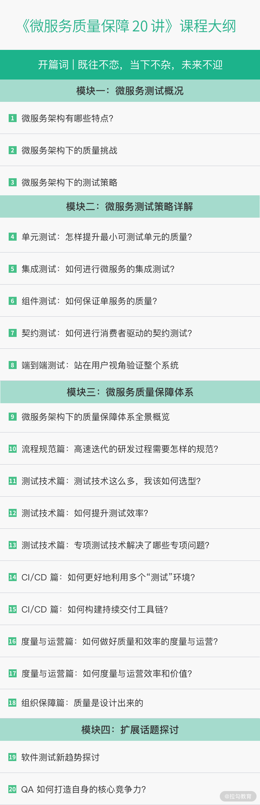

- 00 开篇词 既往不恋，当下不杂，未来不迎.md.html
- 01 微服务架构有哪些特点？.md.html
- 02 微服务架构下的质量挑战.md.html
- 03 微服务架构下的测试策略.md.html
- 04 单元测试：怎样提升最小可测试单元的质量？.md.html
- 05 集成测试：如何进行微服务的集成测试？.md.html
- 06 组件测试：如何保证单服务的质量？.md.html
- 07 契约测试：如何进行消费者驱动的契约测试？.md.html
- 08 端到端测试：站在用户视角验证整个系统.md.html
- 09 微服务架构下的质量保障体系全景概览.md.html
- 10 流程规范篇：高速迭代的研发过程需要怎样的规范？.md.html
- 11 测试技术篇：测试技术这么多，我该如何选型？.md.html
- 12 测试技术篇：如何提升测试效率？.md.html
- 13 测试技术篇：专项测试技术解决了哪些专项问题？.md.html
- 14 CICD 篇：如何更好地利用多个“测试”环境？.md.html
- 15 CICD 篇：如何构建持续交付工具链？.md.html
- 16 度量与运营篇：如何做好质量和效率的度量与运营？.md.html
- 17 度量与运营篇：如何度量与运营效率和价值？.md.html
- 18 组织保障篇：质量是设计出来的.md.html
- 19 软件测试新趋势探讨.md.html
- 20 结束语 QA 如何打造自身的核心竞争力？.md.html
- 捐赠
00 开篇词 既往不恋，当下不杂，未来不迎
你好，我是嘉木，进入测试行业已有十余年，曾在金山、美团、360 等多家知名公司任职。
期间，我曾负责大型网游项目的功能测试和服务端维护工作，经历了整个项目和团队的搭建过程，并参与了质量保障体系的搭建。因为完整的大型项目经验和质量保障经历，我顺利拿到了大厂 Offer 并转入互联网行业。再之后，我开始负责 20 多人的测试团队管理工作，并从 0 到 1 建立了千万级用户量的即时通信软件的服务端质量保障体系，目前该体系仍在项目中发挥着重要作用。
可以说，这十年间我见证了国内从 PC 互联网到移动互联网的转型，自身更是经历了从功能测试工程师到服务端测试开发工程师，再到测试专家的成长蜕变。
微服务架构的盛行，带来了新的机遇与挑战
随着各行业应用的日益复杂化，产品为了适应不断变化的市场环境，就需要快速地迭代，而为了适应这种快速迭代的开发需求，主流的开发框架便由传统的单体应用架构转向微服务架构。技术快速更迭，守成显然不是正确选择，测试从业者同样需要跟上时代的步伐，如果满足于现状则很容易掉队，甚至被淘汰。
比如，现阶段很多测试从业者还在项目中进行着“点点点”的测试工作，其实这样不但工作效率极低，而且难以积累实质经验，久而久之就会变成恶性循环。
再比如，很多测试从业者积累的知识、经验和技能，往往只适用于自己当下的工作场景，这也导致他们不能轻易地换测试对象、换业务模块或者去换工作。因为不仅要重新学习新业务和适应新的协作方，还要变换测试方法和技术等。
也有很多测试从业者认识到了互联网的核心是各种类型的微服务，而且服务端承载了业务的核心逻辑和用户价值，所以他们选择了服务端测试工程师职业方向。思路和切入点很好，但是对于微服务架构下的服务端应该如何测试，网络上大多是关于接口测试自动化及框架之类的资料，很难让他们建立一个整体的认知，并因此容易误会为——服务端测试只能通过接口测试来进行。
其实，服务端测试是一套全方位的测试保障体系，除了保证对外提供的接口符合要求，在业务广度和技术深度方面都需要有良好的覆盖率，并且要求有一系列的流程规范、方法、工具等做支撑。而软件测试人员需要根据技术架构和测试对象的特点，相应地调整自己的测试策略和思路，积累和总结测试方法和技能，进而沉淀出体系化的保障体系。
此外，各大互联网公司也都在积极招募服务端测试高级工程师、服务端测试开发工程师等服务端测试岗位，薪资非常具有竞争优势：
从招聘需求中可以看到，与很多测试从业者对服务端测试的认知和技能还停留在传统的服务端测试阶段不同，大厂已经明确要求服务端测试工程师参与服务端质量保障体系的建设。而即使熟悉服务端质量保障体系的测试人才，也因为微服务的盛行面临新的挑战。他们需要针对微服务的特点、所在项目的环境情况做进一步的分析，对质量保障体系做合理裁剪，才能真正落地应用。
服务端质量（保障）体系的重要性
这里我们有必要先厘清两个概念：测试更多指具体的测试活动，而质量保障是一个全面的体系化的内容，测试只是其中的一个环节或方面。
对业务发展来说，质量保障体系是企业内部系统的技术和管理手段，是为满足业务发展需要、生产出满足质量目标的产品而建立的，有计划的、系统的企业活动。它随着业务发展的阶段性规划和目标做调整，具有强烈的实用意义，不是单为建立体系而建立。
对个人职业发展来说，质量保障体系指明了一个测试人员的终极目标。初阶测试人员的工作重点为“具体的测试工作”，中阶测试人员除了“具体的测试工作”，还需要能够参与“质量保障体系的建设”，而像测试架构师、测试专家、测试经理等高阶测试人员则需要能够规划、设计和主导“质量保障体系的建设”。可见，工作中对“质量保障体系建设”的投入度体现了测试人员的职业发展阶段和核心竞争力，并且影响着测试人员的薪资待遇。
具体到实际工作场景中，假如没有搭建测试环境并建立提交测试的规范，测试活动无从开展；假如没有设置可量化的质量目标，测试活动都不知道应该在什么时候结束；假如不对质量指标进行定期分析和运营，就没有办法针对某类质量痛点做定向改进；假如没有引入丰富的测试技术和手段，测试活动的充分性和效率就无法保障……这些都是质量保障体系的范畴，可见质量保障体系，既是基础，又是核心。
对于测试人员来说，一定要尽早树立测试策略分析和构建质量保障体系的意识，从全局视角理解所在业务中的质量保障体系。以终为始，有意识、有规划地补齐质量保障体系中的各种手段和技能，才能去体验不同的职业成长路径。
课程设计
借由这个微服务质量保障专栏，我希望能弥补市面上这部分知识的空白。现如今绝大多数服务端都是以微服务的形式存在，这也正是我围绕微服务的测试和质量保障展开介绍的关键所在。
专栏合计 4 个模块，共 20 篇文章，包含了技术、体系、经验、方法论等内容，这正是一个测试从业者从新手到资深必须建立的知识体系。
- 微服务测试概况。 我介绍了微服务的产生背景和基本特点，微服务架构下服务端质量面临的各种挑战，以及应该通过什么样的测试策略和质量保障体系来应对这些挑战。学完本部分，你可以对微服务的成因有个基本了解，能够从正反两面来看微服务的特点，为做好微服务测试打好基础。
- 微服务测试策略详解。 微服务测试在深度上需要通过分层测试来完成，主要包括单元测试、集成测试、组件测试、契约测试、端到端测试等分层测试技术和方法，本模块将一一详解这些内容。学完本部分，你会具备对微服务进行深度测试的能力。
- 微服务质量保障体系。 因为只有分层的测试策略无法全面保障服务端质量，我在此详细讲解了微服务的质量保障体系。在实际的项目中，你还需要不断优化研发过程中的流程规范，优化测试技术和工具，并对微服务的各类属性进行有效度量与运营，再配合必要的组织保障，方可全方位保障微服务的质量。学完本部分，你可以全方位、多角度地构建微服务的质量保障体系。
- 扩展话题探讨。 通过“软件测试新趋势探讨”和“测试从业者如何打造自身的核心竞争力”这两个话题，使你了解趋势，并保持开放心态，主动拥抱变化。

讲师寄语
曾国藩说：“既往不恋，当下不杂，未来不迎”，表达了他对于过去、现在与未来的不同态度：对未来有规划，不过分留恋过去，走好当下的每一步，为达成目标持续努力。这句话同样适用于每一位测试从业者。
虽然我们每个人入行的起点不同，但目标和终点往往是一致的，希望你能够通过持续的学习和努力打造核心竞争力，让自己在职业道路上有更多的选择。而这也就意味着，你不能一味重复几乎所有从业者人都会做的事情。
© 2019 - 2023 Liangliang Lee. Powered by gin and hexo-theme-book.